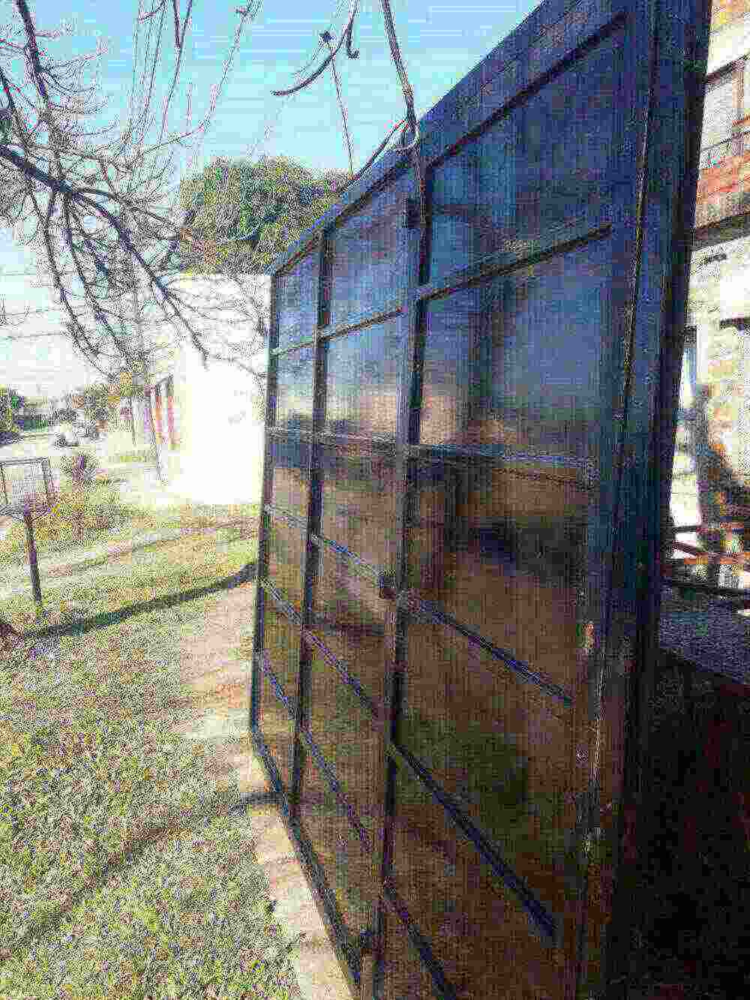

N.º 01 — Rejas
Rejas
Para ventanas, frentes y patios; diseño a medida de tu abertura.

Herrería · Corrientes Capital
Rejas, portones, puertas reforzadas y parrillas de acero inoxidable hechas a medida por Cardozo, herrero y ex soldador del Astillero Corrientes.
Servicios · Taller
N.º 01 — Rejas
Para ventanas, frentes y patios; diseño a medida de tu abertura.
N.º 02 — Puertas
Chapa y estructura pensadas para seguridad real.
N.º 03 — Portones
Corredizos o de abrir, de chapa o barrotes, medidos en tu casa.
N.º 04 — Inoxidable
Parrillas, tapas y guillotinas para quinchos, que no se oxidan.
N.º 05 — Soldadura
En acero inoxidable, aluminio y básico de alta presión; reparaciones incluidas.
Todo se hace a medida. Si no ves lo que necesitás, consultá.
Consultá por WhatsAppEl herrero · Historia
Hace más de 50 años que Cardozo trabaja el hierro. Treinta de esos años los pasó como soldador en el Astillero Corrientes, desde sus inicios, donde una soldadura mal hecha no es una opción. Esa exigencia es la que pone hoy en cada reja, portón o parrilla que sale de su taller.
“Lo que hago, lo hago para que dure.”
— Cardozo
Trabajos · Galería
Tocá una foto para verla grande.
Proceso · Paso a paso
Mandá foto y medidas aproximadas.
Cardozo va en persona a tu casa.
Claro y sin vueltas.
Hecho a medida de tu abertura.
Colocado y terminado.
Reseñas · Vecinos
“Me hizo el portón del garaje hace dos años y sigue como el primer día. Vino a medir él mismo y cumplió con la fecha.”
“Le pedí una parrilla inox con guillotina para el quincho. Un trabajo prolijo, se nota que sabe soldar de verdad.”
“Necesitaba rejas urgente después de un intento de robo. Me atendió rápido y me explicó todo sin vueltas.”
“Lo conozco desde la época del astillero. Si hay que soldar inoxidable o aluminio, es a él a quien llamo.”
“Arregló una puerta de chapa que otro había dejado mal. Precio justo y trato de antes.”
“Hicimos las rejas de toda la casa con él. Se tomó el tiempo de proponer un diseño que quedara lindo, no solo seguro.”
Taller · Ubicación
Hernán Cortés 884Corrientes Capital (CP 3400)
Corrientes Capital; ciudades aledañas según el trabajo cotizado.
Contacto · Presupuesto
Mandá una foto por WhatsApp y Cardozo te responde.
O llamá al 379 455-7951